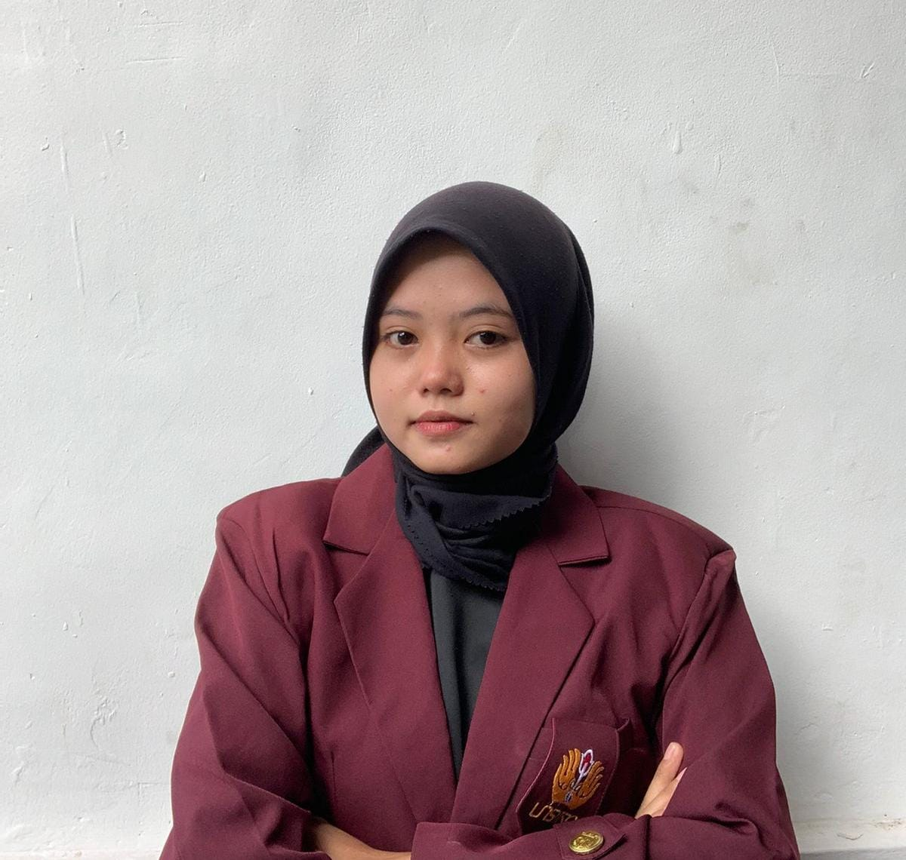

Surat Lamaran Kerja
Perihal: Lamaran Pekerjaan
Kepada
Bapak/ Ibu Kepala HR Telkom Indonesia
di Jakarta
Dengan Hormat,
Berdasarkan informasi yang saya peroleh dari iklan di Glints pada Senin, 2 Maret 2024 bahwa di perusahaan yang Bapak/ Ibu pimpin membuka lowongan kerja sebagai data analyst.
Melalui surat lamaran ini, saya ingin mengajukan diri untuk melamar di posisi tersebut.
Untuk melengkapi beberapa data yang diperlukan sebagai bahan pertimbangan Bapak/ Ibu pimpinan di waktu yang akan datang,
saya lampirkan data diri sebagai berikut:
- Surat Lamaran Kerja
- Biodata Pribadi
- SKCK
- Portofolio
Demikian surat permohonan ini saya buat dengan sebenar benarnya. Besar harapan saya untuk dapat mendiskusikan tentang kualifikasi saya pada saat wawancara.
Atas perhatian Bapak/ Ibu saya mengucapkan terima kasih.
Hormat saya,
Allya Putri Nadila Gustin
|
My Profile

Allya Putri Nadila Gustin
2210631170111
Trenggalek, 32 agustus 2030
liyaliyu293@gmail.com
Cikarang Utara, Jawa Barat
Mahasiswi Universitas Singaperbangsa Karawang, Fakultas Ilmu Komputer, Prodi Informatika
|